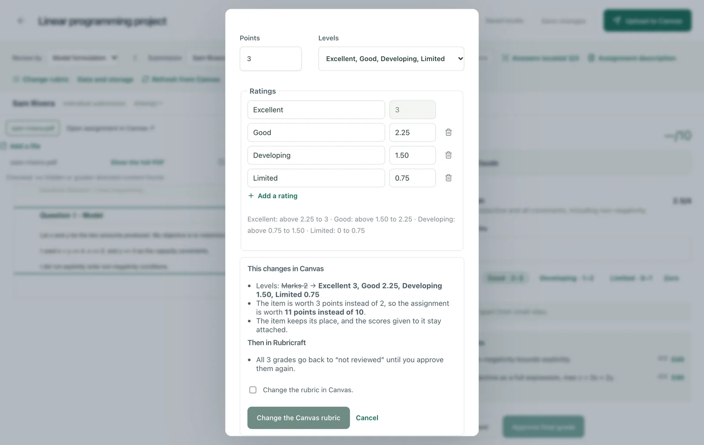
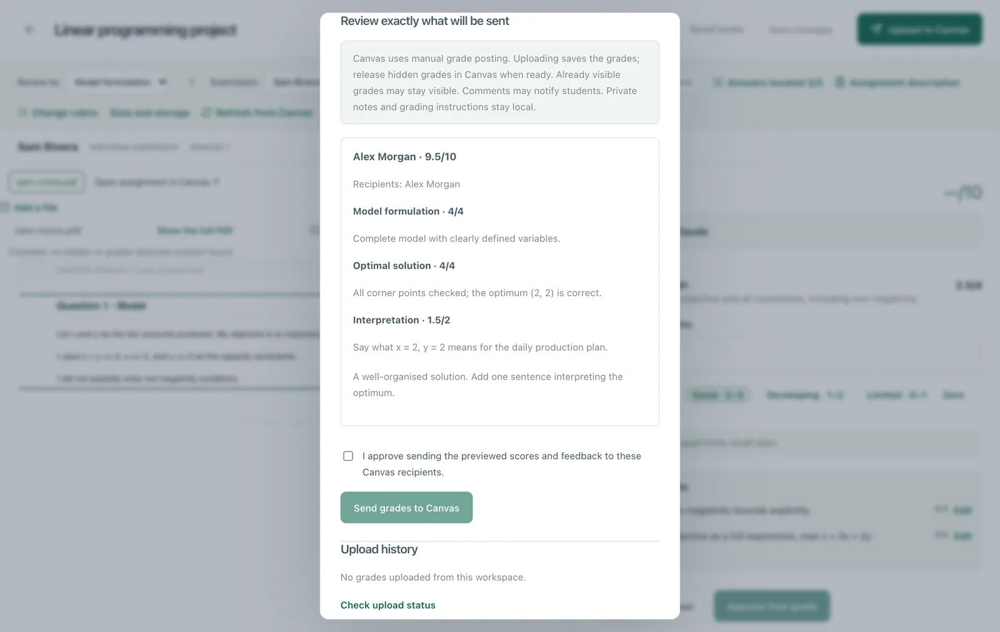
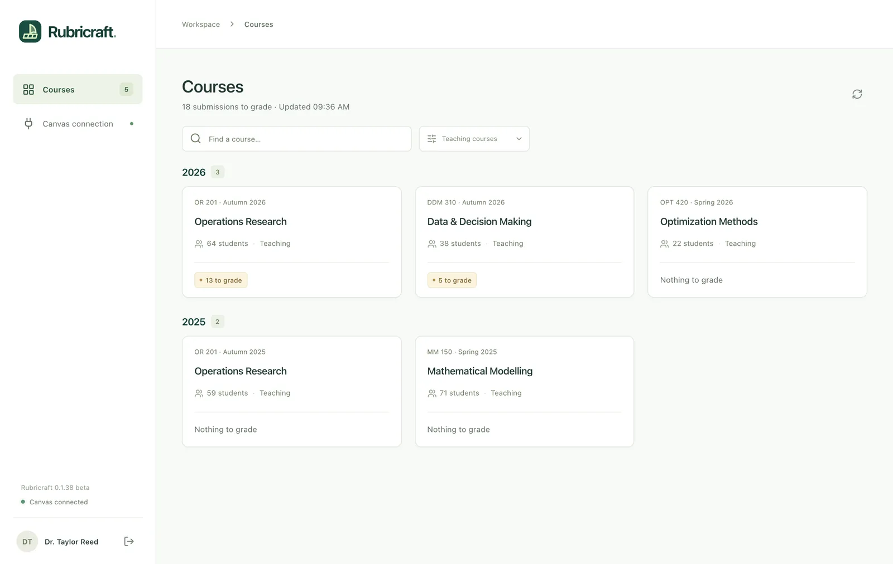

Rubric grading for Canvas.
A free desktop app for teachers. Grade one rubric item at a time across all students, reuse your remarks, and send approved grades back to Canvas.
Claude can draft grades for you to check, with the student's work beside the rubric. That is optional.
Download the beta How it worksFree · Mac, Windows and Linux
How it works
-
Open an assignment
Rubricraft downloads the description, rubric and submissions from Canvas. Grades and comments already in Canvas are kept, so you can continue where you left off.
-
Grade
Go through the students one by one, or one rubric item at a time for the whole class. Grade yourself or ask Claude for a draft.
-
Approve and send
You see exactly what each student will receive. Nothing goes to Canvas until you approve it. A grade already in Canvas is replaced only if you choose to.
What it does
-
One rubric item, every student
Score the same rubric item for the whole class in a row, so the same standard applies to everyone. Claude can find where each student answered it and list those parts together.
-
Levels and remarks
Pick a level, such as Good, to set the score. Add remarks like “Missing units, −0.5” once and reuse them for every student with the same issue. Change a remark later and everyone who has it is updated.
-
Change the rubric while you grade
Add, edit or remove rubric items and levels in Canvas from the grading screen. You see the new total and the scores affected before anything changes.
-
The files students hand in
PDF (typed, handwritten or scanned), Word (.docx), Excel (.xlsx), Jupyter notebooks (.ipynb) with their equations and plots, code (Python, R, MATLAB, Julia, SQL) and text (Markdown, plain text, CSV). Zip files are unpacked. Add a file a student emailed you by dragging it onto their submission. Search inside any of them.
-
Several files, several rubric items
If a submission has several files, you can say which one each rubric item is graded from: a file type and, if you like, part of its name, such as the report for some items and the notebook for others. Rubricraft opens the right file, and Claude drafts only the items for the file in view. Items without a file count for every file.
-
Optional drafts from Claude
Claude drafts one rubric item or every item for a submission, with scores and feedback using your remarks. You review every draft with the student's work beside the rubric; nothing counts until you approve it.
-
Talk the draft through
Ask Claude about a draft and tell it how the work should be graded. What you agree on is added to the grading instructions, which are used for every student, so the grading is open and the same for all. If the conversation shows that a rubric item needs changing, change it in Canvas from the same screen.
-
Open-ended rubric items too
Not only questions with one correct answer: reports, designs, arguments and code, where good answers differ. You set the levels and remarks, and you decide.
-
Claude only reads
Claude gets the submission and your rubric, and nothing else. It has no tools: it cannot run code, browse the web or open other files on your computer.
-
Hidden text is flagged
Text a reader would not see, such as white text or a note addressed to an AI grader, is shown to you above the submission. It is a reason to look closer, not proof of cheating.
-
No rubric yet?
Claude can propose one from the assignment description for you to edit before it is created in Canvas.
Screens
From the app, with a fictional course and students.





Runs on your computer
Submissions and your grading are stored on your computer. Only Canvas and, if you ask for a draft, Anthropic receive anything.
Asking Claude for a draft sends that student's work and your rubric to Anthropic, using your own Claude account.
Coming next
-
Drafts for the whole class at once
Today Claude drafts one submission at a time. Next, it will draft every submission and group students by how they meet each rubric item, so you can review similar answers together.
-
What the class found hard
Common mistakes across students, and how the assignment and rubric could be clearer next time.
-
Learning outcomes
Which course learning outcomes each rubric item assesses. You can already enter each course's learning outcomes.
Download
Free for anyone. This is a beta.
Download for Mac, Windows or Linux
Before you start
- Try it first on a test course or a past course.
- You need a Canvas access token: in Canvas, open Account › Settings › New access token.
- For drafts, install Claude Code and sign in with your Claude account; Anthropic's pricing applies to that. Without it, everything else works.
Opening it the first time
- Mac (Apple silicon, M1 or later): drag Rubricraft into Applications. The beta is not yet signed by Apple, so macOS blocks it at first. Open it once, then go to System Settings › Privacy & Security and choose Open Anyway.
- Windows: if SmartScreen warns about an unknown publisher, choose More info › Run anyway.
-
Linux: install the
.deb, or make the.AppImageexecutable and run it.
Feedback
Report a problem or suggest an idea on GitHub (a free GitHub account is needed). Please never include student names, student work or your Canvas token.
Rubricraft is developed at the University of Iceland, School of Engineering and Natural Sciences, within the project “Betra námsmat með gervigreind” (Better assessment with AI), supported by the University of Iceland Teaching Fund (Kennslumálasjóður).